Distilleria Rizzi, Mestrino: liquori, amari, sciroppi e aromi per la pasticceria
Oggi come una volta
Liquori, amari, sciroppi e aromi per la pasticceria. A Mestrino dal 1926, di Maddalena e Alessandro.
Bitter, 25% vol. «Liquore da aperitivo tradizionale padovano», nella bottiglia da 100 cl.
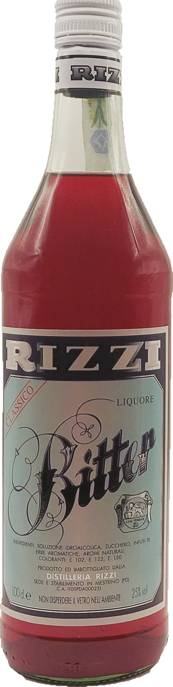
Facciamo tutto noi, dall’inizio alla fine.
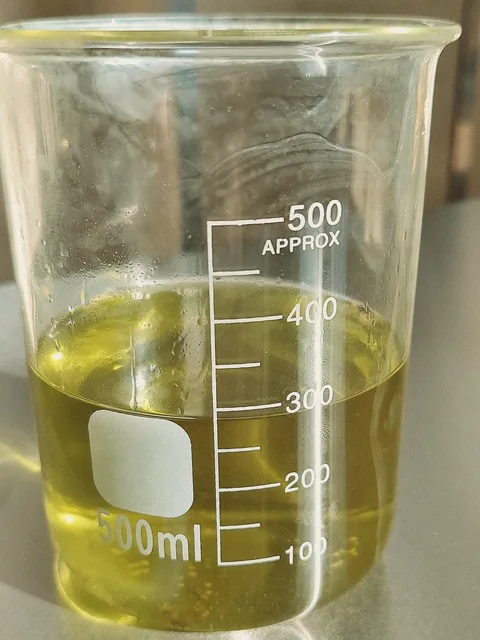
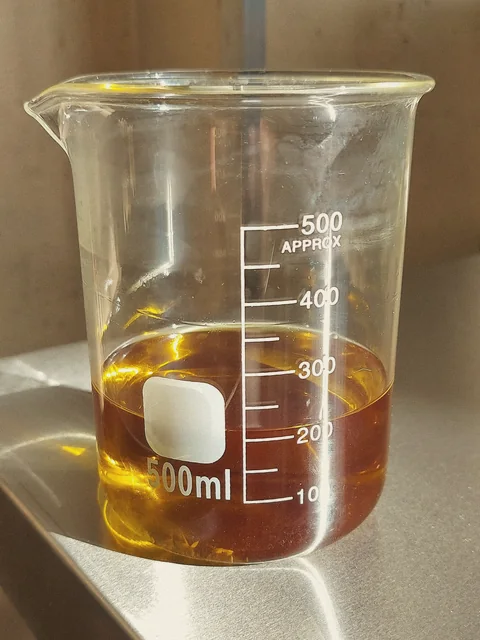
Produciamo i nostri liquori in maniera artigianale, nel nostro stabilimento di Mestrino (PD), seguendo ancora le ricette e le procedure scritte dai fondatori della distilleria.
Infusi, alcolati, sciroppi e liquori. Gli agrumi e la frutta li lavoriamo noi: «abbiamo un estrattore per ricavare il succo che usiamo negli sciroppi e un essiccatore per la scorza».Maddalena e Alessandro a La Difesa del Popolo, 16 marzo 2025
Da 11 a 70 gradi
Dall’Aperizzi, «perfetto per lo spritz classico», alla Vodka a 70°, «prodotto destinato ad uso professionale».
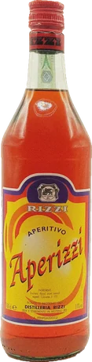
11%Aperizzi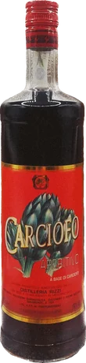
16%Carciofo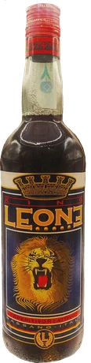
21%Leone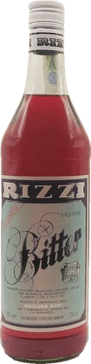
25%Bitter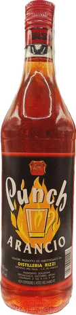
30%Punch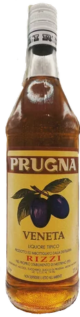
35%Prugna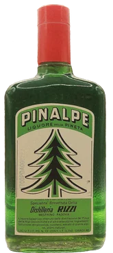
40%Pinalpe, 75 cl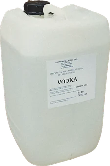
70°Vodka, in tanica
Bottiglie da 100 cl, il Pinalpe da 75 cl. La Vodka 70° per la pasticceria in taniche da 5 a 30 litri e in fusti da 50 e 225 litri.
Tutti i liquori e gli amariOltre 40 aromi ed ingredienti per la pasticceria professionale
«Una linea pensata per laboratori artigianali, professionisti e appassionati che cercano ingredienti capaci di esaltare creme, impasti, bagne e dessert.»
- Sciroppi di zucchero
- Per bagne e aromatizzazioni, pronti all’uso.
I gusti
Arancia, limone, pompelmo; amarena, ananas, fragola, frutti di bosco, mango, mela verde, melone, mirtillo, tropical; anice, liquirizia, menta; caffè, cocco, cola.
- Aromi alcolici a 70°
- Per creme, impasti e farciture, dall’Alchermes al King George.
Gli aromi
Arancio, limone, mandarino, curaçao; cherry, fragola, maraschino; alchermes, amaretto, cacao, caffè, vaniglia; anice, benevento, jamaica, king george, trio. Anche aroma vodka.
- Creme e vini per pasticceria
- Marsala fine ambra secco DOP 17,5°, Cremovo (Marsala all’uovo) 18°, Ovorizzi (liquore all’uovo) 18°, Vermouth bianco 16,5°.
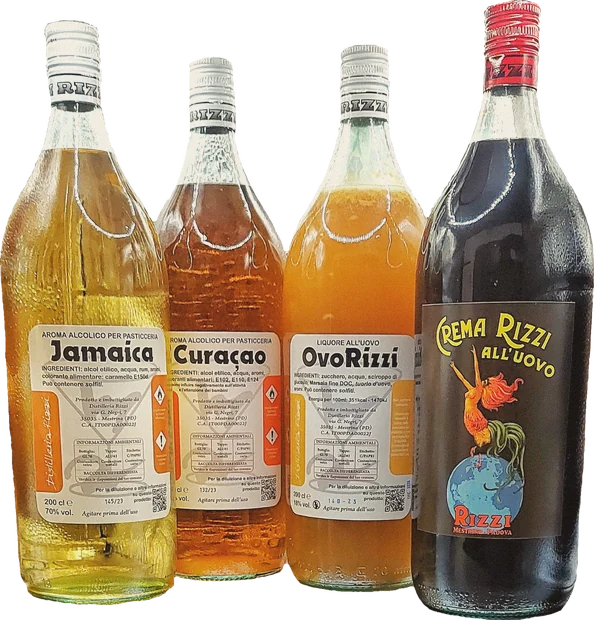
«Abbiamo trovato una serie di strumenti del fondatore, tra cui alcuni ricettari originali: stiamo cercando di rifare quelle ricette, adeguandole alle normative e alle esigenze di oggi, senza i coloranti proibiti e con minori quantità di zucchero.»
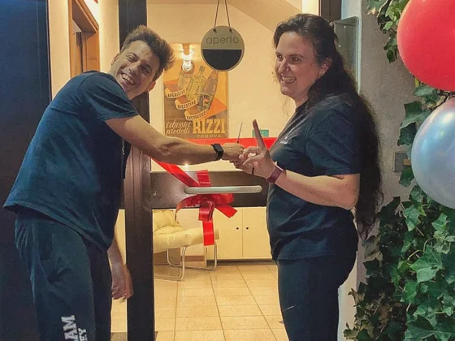
Dal 14 dicembre 2022 Distilleria Rizzi prosegue con Maddalena e Alessandro
Il 29 settembre 2024 hanno aperto lo spaccio aziendale nella sede, per accogliere anche i clienti privati. Era l’ufficio al piano terra: i mobili nuovi arrivano dall’antica sartoria Vogue 80 di via Roma, a Padova.
Fino ad allora l’azienda si rivolgeva «ai soli professionisti del settore, quali bar, pasticcerie, ristoranti».
Spaccio e contatti
049 900 0053Ufficio e spaccio. Per lo spaccio chiamaci prima di passare: ti diciamo quando trovarci.
Orari
| Ufficio | dal lunedì al venerdì 9:00-12:30 e 13:30-17:00 |
| Spaccio | chiama per la disponibilità al 049 900 0053 |
Scrivici o chiama
Maddalena 351 307 0422
Alessandro 351 385 8112
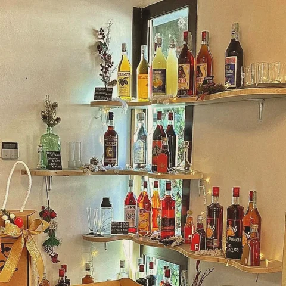